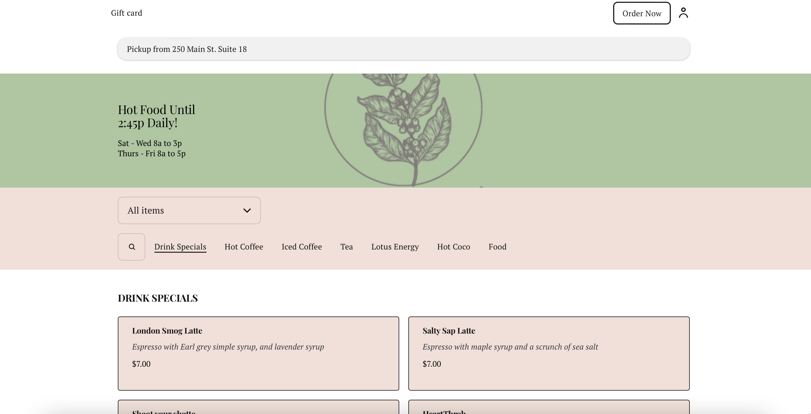
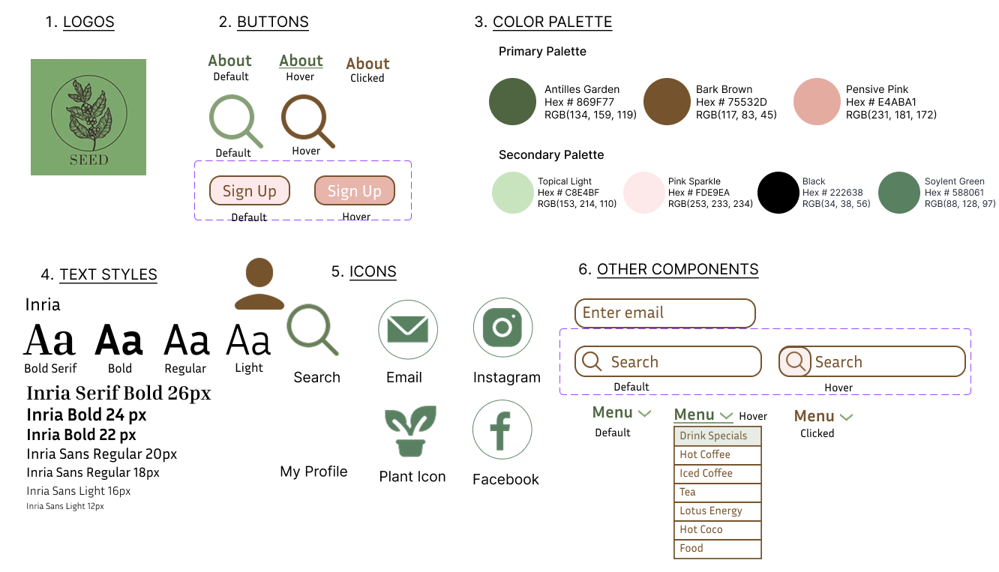
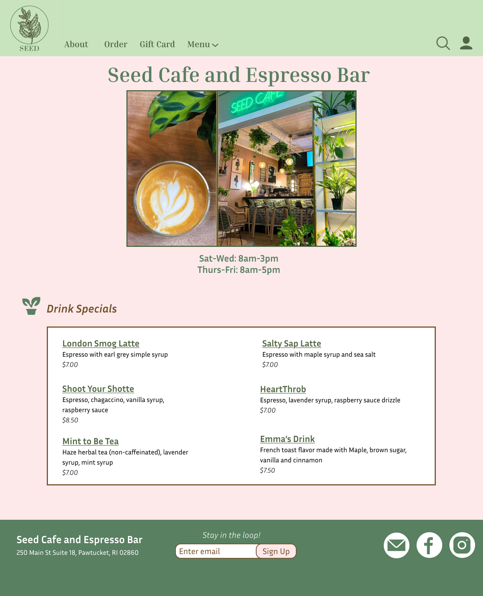
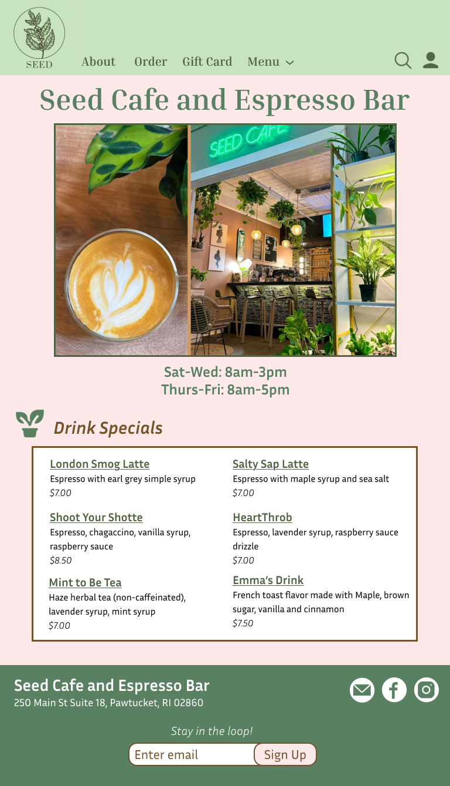
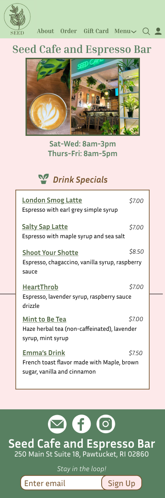
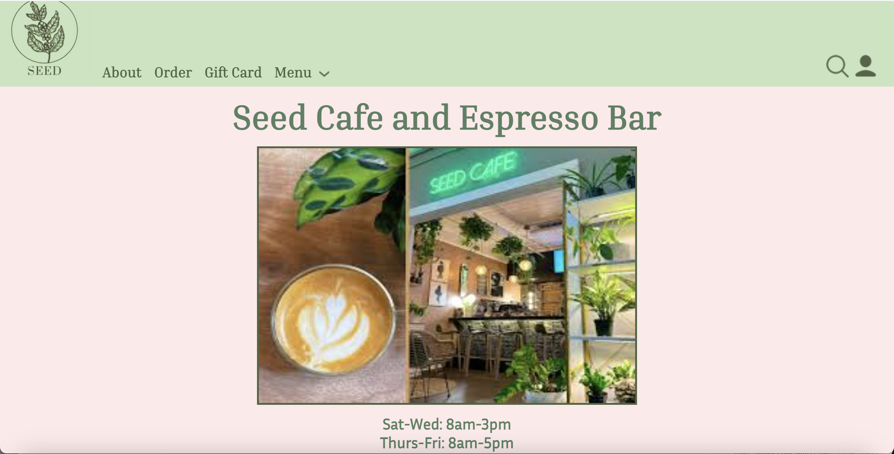
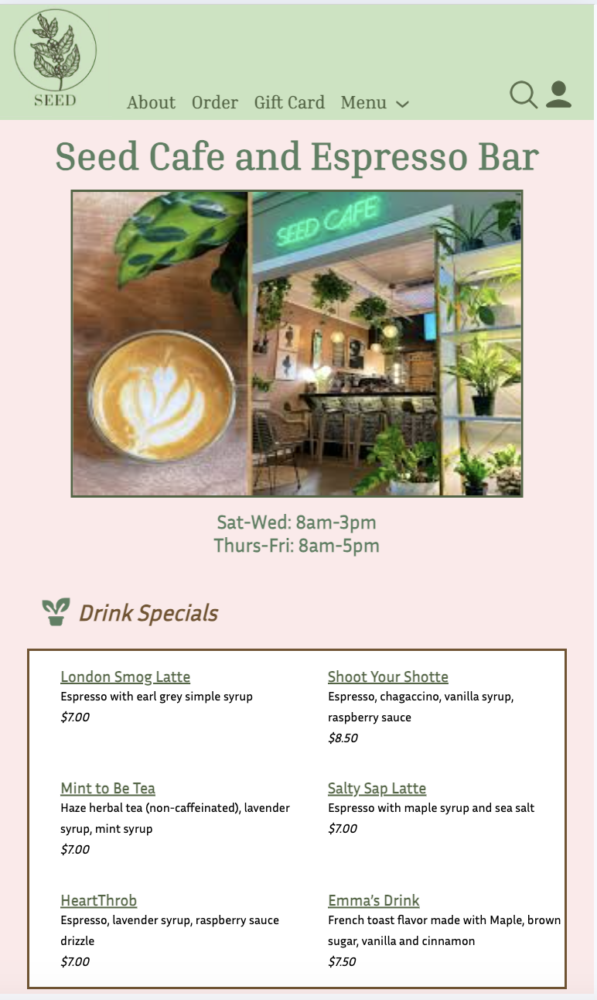
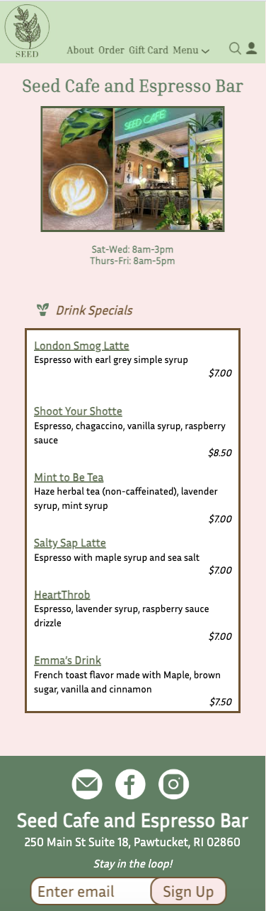

Designing for All Devices: A Responsive Redesign of Seed Cafe
This case study focuses on webpage redesign with the primary goals of enhancing user experience across devices and improving accessibility for better usability.
As someone always looking to try new coffee shops in Providence, I stumbled upon this place through a Google search, but I quickly noticed the website was not very informative or helpful to a prospective customer:

(The full original website can be found here.)
Here are some of the main issues I had with Seed Cafe's interface:
| Efficiency |
Learnability |
Memorability |
Accessibility (WebAIM WAVE) |
| Small, hard-to-read font – Slows processing, strains experience |
No "Seed Cafe" header – Users don’t know what site it is |
No visual/brand identity – Nothing memorable about the site |
Detected missing page title, no heading structure, and no page regions |
| Search bar lacks Enter button – Slows task completion |
No about section – Users don’t learn cafe’s identity or values |
Poor menu layout – Hard to recall or locate items |
Most buttons did not have an aria-label |
| Identical pink menu boxes – Hard to scan or differentiate items |
No photos of cafe or food – Brand/menu appeal unclear |
Confusing/broken UI elements – Users forget how to navigate |
Interactive elements were not all accessible using keyboard |
| Non-functional filter dropdown – Frustration and clutter |
Unclear location info – Users can’t find where the cafe is |
|
|
I choose to redesign the webpage for Seed Cafe with the following goals in mind:
Creating a consistent look and feel
Making important information stand out more clearly
Helping the cafe feel more recognizable online
Making the website easier for everyone to use
Given these objectives, here is my redesigned style guide:

Using Figma, I was also able to create high-fidelity mockups for three different screen sizes:
1. Computer(3840px width):

2. Tablet(Max-width 768px):

3. Phone(Max-width 375px):

Layout and Styling Notes:
Header:
Flex layout, space-between, bottom-aligned
Large serif for top menu, left aligned
Search and profile icons in a seperate flex box than logo and menu options
Tablet version
- Same size headers, just shifted more central
- Main image shrinks (side margins 90px)
Phone version
- Typography of headers shrink from 23px to 14px and are shifted to center
- Icon sizes decrease
Title and Image:
No flex and centered
Tablet version
- Title font and image size shrink slightly (image margins 140px)
- Operating hours stay same
Phone version
- Image margins decrease to 50px
- Title font decreases to 25px
- Operating hours font decreases to 18px
Drink Specials Menu:
"Drink Specials" menu left aligned and in a flex box with plant icon
Menu container: Grid layout (2 cols, 3 rows)
Responsive max-width using calc(100vw - 70px)
Tablet version
- Menu container width decreases (margins 50px)
- Font sizes and line height slightly decrease
Phone version
- Menu container margins decrease to 35px
- Container grid turns into one column
- Drink prices shift to the right
- Font sizes/line height decrease
Footer:
Flex row-wrap, space-around, responsive height
3 seperate flexboxes within: One for name of cafe and address, one for email sign-up textbox, and another for social media icons
Labels each grouping of items as .item1, .item2, and .item3 for custom order values per screen size
Sign-up button and search box positioned absolutely to allow overlap of elements
Tablet version
- Container turns into a grid and sign-up button gets moved to second row
Phone version
- Flexbox turns into one-column
Click here to explore the live version of the redesigned Seed Cafe webpage.
With the design vision and layout choices established, here’s the fully developed version of the Seed Cafe webpage (shown on all three screen sizes):
Computer(3840px width):

Tablet(Max-width 768px):

Phone(Max-width 375px):

The responsive redesign of the Seed Cafe webpage enhances both usability and visual appeal across devices.
By improving layout consistency, establishing a clearer visual hierarchy, and reinforcing the cafe’s brand identity, the site
now offers a more intuitive and engaging user experience.